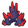

Funfest Missions, which replace the Entralink Missions in Black and White, can be started at the Entree in the Entralink. They are used to level up the player's Entree and give the player access to Pass Powers that give various bonuses to the player. This page, adapted from a document created by SadisticMystic (linked at the bottom and used with permission), explains the different types of missions.
To activate a Funfest Mission, the player must warp to Entralink and activate a mission from the Entree. Once activated, the player will be warped back to their previous location and the mission will begin. Funfest Missions can be activated anywhere in Unova as long as travel to the Entralink is possible there, and can be played with between 1 and 99 other players. Nearby local players will receive a notification and an option to join the mission in progress from the Tag Log screen, even if they are in a Unova location that does not allow travel to the Entralink. However, other players cannot join a mission if there are fewer than 30 seconds left on the timer.
Every mission has a time limit and requires players to perform some task to receive points, with the ultimate goal being to obtain a target score that depends on the mission and level. If the target score is reached, players can usually continue trying to score additional points afterward in order to increase their overall reward. In certain missions, however, the mission will end once the target is reached, and in these missions, the time limit is also extended with each point scored. If a player joins such a mission in progress, the current timer, which already reflects any bonuses from points that may have been awarded, will show up for that player and then immediately be extended by additional bonus time based on the current score up to that point, effectively double-counting those previously existing bonuses for the new player only. If a player has started engaging an NPC in conversation or a Pokémon in battle shortly before time runs out in any mission, the conversation or battle will be allowed to run to its conclusion before the mission is declared over for that player, and if doing so meets the mission's criteria for scoring a point, that final point will be added to the overall tally.
In missions that involve specially generated sparkling spots or NPCs, a random seed is determined just once at the beginning of the mission to determine which spots appear and which don't. If a spot appears for one player, any other participant that joins the mission can also see the same set of active spots appear in the same places, and can collect points from them regardless of whether other players have already done so. Each player's game can only keep track of the six most recent overworld maps on which they have scored points; upon scoring a point from a seventh map, any spots from the first map that the player had previously collected will respawn if the player returns there.
In NPC missions, if an NPC tries to sell or trade the player an item they already have 999 of, the transaction cannot be completed until the player makes room, and the NPC stays where it is without awarding a point. In item missions, the sparkle still disappears and awards a point, even though the item cannot be received.
Players can voluntarily end a mission at any time by tapping the white flag icon on the lower right corner of the bottom screen, in which case the mission will be treated as a failure and no rewards will be obtained, even if the target score has already been met. A mission will also terminate without being scored in any of the following circumstances:
If any player resets or powers off the game while a mission with multiple players is in progress, other players will be able to keep playing, and the player who powered off the game can rejoin the same mission, time permitting. However, the reconnecting player's points will be deducted from the total score, and other players' game displays will not acknowledge further points scored by that player until their personal score goes back up to exceed the value it had when they disconnected from the mission.
Upon the successful completion of a mission, all remaining participants will be rewarded with Pass Orbs or alternative items (depending on the mission). There is always a base reward for every given mission and level, which is always received. A Bonus Score, consisting of additional copies of the same item, can be received; the quantity of the item received is is calculated as Total Score * Mission Level ÷ 3, rounded down and limited to a maximum of 99. (No Bonus Score will be obtained if this calculation rounds down to 0.) For missions that end automatically after reaching the target, in which the time remaining at that point is displayed on the results screen, the bonus score is instead Personal Score + (Seconds Remaining * Mission Level ÷ 45). In these cases, the rewards can vary if two or more players contributed uneven numbers of points to the goal, or see different amounts of time left when it's over.
Additionally, in level 3 or 4 missions that do not end immediately on reaching the target, a Double Score Bonus can be unlocked if the total score reached is at least twice the target score. If this bonus is achieved, an extra item is given to each participant (possibly in multiples).
Completing a mission can also increase all remaining participants' Entree levels, depending on the version of the host player's game (Black 2 or White 2). If the player is completing all missions alone, they will only be able to receive experience in either the Black or White level. In all cases, the player receives experience equal to the total score, The experience values required to level up can be found on the Entralink page; the player cannot gain more than 10 levels in one mission.
No experience is given for a mission that falls short of the goal, or one where the players surrender, no matter how many points had been scored beforehand. If a player participates in a successful mission, but leaves before it is completed, they will not receive any Entree experience, but the players who do successfully complete the mission will.
Level 2 and 3 missions can be unlocked by successfully completing earlier levels of the same mission, with up to three stars shown beside the mission name to represent the highest level that has been completed. Level 4 missions can be unlocked by pressing "Select, Down, Down, Down, Up, Up, Up, Up, Select" on the missions screen at any time. Completing a level 4 mission does not unlock lower levels, and does not place stars beside the mission name in the menu, nor does it count toward the "Funfest Complete" medal, but it does add to the player's tracked total of completed missions.
The table below lists all Funfest missions with their time limits, target scores, and rewards. The "Solo clear?" column on the far right indicates if the mission (and which levels) can be completed as a solo player.
| Mission | Time limit | Lv. 1 Target | Lv. 2 Target | Lv. 3 Target | Lv. 4 Target | Description | Base Reward (Lv. 1/2/3/4) |
Double Score Bonus (Lv. 3-4 only) |
Solo clear? |
|---|---|---|---|---|---|---|---|---|---|
| The First Berry Search! | 3 min | 5 | N/A | N/A | N/A | Collect 5 or more Berries within the time limit! Look for shining places in towns and on roads! |
Pass Orb (5) |
N/A | Yes |
| Collect Berries! | 3 | 3 | 6 | 12 | 25 | Collect <number> or more Berries within the time limit! Look for shining places in towns and on roads! |
Pass Orb (2/4/8/15) |
Premier Ball | Yes; level 4 requires very good luck |
| Find Lost Items! | 5 min | 10 | 15 | 20 | 40 | Collect <number> or more lost items within the time limit. Many can be found in towns and on roads! |
Pass Orb (3/5/10/15) |
Premier Ball | Yes |
| Find Lost Boys! | 3 min | 4 | 8 | 16 | 50 | Find <number> or more lost children within the time limit! Speak to boys in towns and on roads! |
Pass Orb (4/8/16/25) |
Moomoo Milk (12x) | Levels 1-3 only |
| Enjoy Shopping! | 3 min | 3 | 6 | 12 | 25 | Enjoy bargain shopping! Speak to shop clerks in towns and on roads, and shop <number> or more times! |
Pass Orb (2/5/10/15) |
Nugget | Levels 1-3 only |
| Find Audino! | 5 min | 1 | 5 | 10 | 50 | Find Audino in rustling grass! Defeat or catch <number> or more Pokémon to accomplish the mission! |
Pass Orb (5/10/20/50) |
Max Repel (10x) | Levels 1-3 only |
| Search for <number> Pokémon! | 3 min (5 on Level 4) The time limit is extended by 1 min for each Pokémon found. |
3 | 5 | 10 | 50 | Find Pokémon in rustling grass and dust clouds. Find <number> Pokémon to clear the mission! | Pass Orb (5/10/15/20) |
N/A | Yes |
| Train with Martial Artists! | 5 min | 2 | 4 | 8 | 100 | Fight with novice martial artists, and help their training! Defeat <number> or more martial artists within the time limit! |
Pass Orb (3/6/12/60) |
Max Revive | Levels 1-3 only |
| Sparring with <number> Trainers! | 3 min (5 on Levels 3 and 4) The time limit is extended by 1 min for each Trainer defeated, up to a maximum total time of 1 hour |
10 | 30 | 50 | 100 | Fight with novice martial artists, and help their training! Defeat <number> or more martial artists! |
Pass Orb (2/4/8/10) |
N/A | Levels 1-3 only |
| Get Rich Quick! (Black 2 only) |
3 min | 3 | 6 | 12 | 25 | Collect <number> or more treasures within the time limit! Look for shining places in caves and forests! |
Pass Orb (2/5/10/15) |
Star Piece (5x) | Levels 1-3 only |
| Treasure Hunting! (White 2 only) |
3 min | 6 | 12 | 24 | 50 | Collect items in caves and forests. You may find a treasure? |
Pass Orb (2/5/10/15) | Star Piece (5x) | Levels 1-3 only; level 3 requires very good luck |
| Exciting (Black 2)/Exhilarating (White 2) Trading! | 5 min | 2 | 4 | 8 | 50 | Trade items with <number> or more people! Speak to Backpackers who travel all over the world! |
Pass Orb (3/6/12/50) | Nugget | Levels 1-3 only |
| Find Emolga! | 5 min | 1 | 5 | 10 | 30 | Find Emolga in rustling grass! The Pokémon are said to be found on Route 5. Take advantage of their Abilities. |
Pass Orb (3/10/15/40) |
Max Repel (10x) | Levels 1-3 only; level 3 requires very good luck |
| Wings Falling on the Drawbridge | 3 min | 5 | 10 | 40 | 100 | Pick up and collect wings at Driftveil Drawbridge! When you hear Pokémon fluttering their wings, check nearby areas! |
Pass Orb (1/2/10/30) |
Rare Candy | Levels 1-2 only |
| Find Treasures! | 3 min | 5 | 10 | 40 | 100 | Find treasures, which can be found in caves in different areas! Look for dust clouds! |
Pass Orb (1/2/10/30) |
Comet Shard | Levels 1-2 only |
| Mushrooms' Hide-and-Seek! | 5 min (3 on Level 4) | 3 | 10 | 30 | 5 | Find Foongus hiding in tall grass! They look like Poké Balls! |
Big Mushroom (5/10/30/5) |
BalmMushroom | Levels 1, 2, and 4 only; level 2 requires very good luck |
| Find Mysterious (Black 2)/Shining (White 2) Ores! | 5 min (3 on Level 4) | 10 | 20 | 30 | 30 | Find mysterious ores! Search caves and roads, and collect <number> or more items! |
Pass Orb (1/2/3/5) |
Max Revive (5x) | Levels 1-3 only |
| The <number> Lost Treasures | 5 min. The time limit is extended by 30 sec for each treasure found |
2 | 4 | 10 | 30 | Find the lost relic treasures! Of course, they won't be found so easily... |
Pass Orb (2/4/10/30) |
N/A | Yes |
| Big Harvest of Berries! | 3 min | 6 | 12 | 24 | 100 | Collect <number> or more Berries within the time limit! It is said that a lot of them can be found in forests and on roads! |
Pass Orb (3/6/8/50) |
Lum Berry (10x) | Levels 1-3 only; level 3 requires very good luck |
| Ring the Bell... | 3 min | 1 | 2 | 8 | 10 | Ring the bell at the top of the Celestial Tower! Start all over from the entrance to do it multiple times! |
Pass Orb (3/6/12/30) |
Stardust (5x) | Levels 1-2 only |
| The Bell That Rings <number> Times | 3 min The time limit is extended by 1 min for each successful ring |
3 | 5 | 7 | 10 | Ring the bell at the top of Celestial Tower! Ring it <number> times to clear the mission! |
Pass Orb (1/3/12/30) |
N/A | Yes; level 4 requires very good luck |
| Path to an Ace! | 5 min | 3 | 6 | 12 | 50 | Be a training partner for Ace Trainers! Defeat <number> or more Ace Trainers within the time limit! |
Pass Orb (3/6/12/50) |
Rare Candy | Levels 1-2 only |
| Shocking Shopping! | 3 min | 4 | 8 | 32 | 100 | Speak to men wearing black, and buy rare items! Every time you speak to them, the prices will change. Don't get swindled! |
Pass Orb (4/8/15/100) |
Rare Candy | Levels 1-2 only |
| Memory Training! | 3 min (5 on Level 4) The time limit is extended by 30 sec for each correct answer |
6 | 10 | 12 | 50 | Speak to Clowns in towns and on roads, and answer quizzes! Answer questions correctly <number> times, and the mission will be a success! |
Heart Scale (3/4/5/10) | N/A | Yes |
| Push the Limit of Your Memory... | 5 min (3 on Level 4) | 5 | 10 | 40 | 10 | Speak to Clowns in towns and on roads, and answer quizzes! The quiz will get harder and harder. Keep answering questions correctly! |
Pass Orb (6/12/40/1) |
Heart Scale (5x) | Levels 1, 2, and 4 only |
| Find Rustling Grass! | 10 min | 5 | 10 | 20 | 100 | Find Pokémon in rustling grass and dust clouds. | Pass Orb (5/10/20/50) |
Max Repel (10x) | Levels 1-3 only |
| Find Shards! | 3 min | 3 | 16 | 32 | 100 | Collect <number> or more shards within the time limit! Look for shining places in towns and on roads! |
Pass Orb (2/4/8/30) |
Star Piece (5x) | Levels 1-2 only |
| Forgotten (Black 2)/Not-Found (White 2) Lost Items | 2 min | 5 | 10 | 50 | 100 | Collect <number> or more lost items within the time limit. Many can be found in towns and roads! |
Pass Orb (1/2/10/30) |
Premier Ball (5x) | Levels 1-2 only |
| What Is the Best (Black 2)/Real (White 2) Price? | 3 min. | 6 | 12 | 40 | 50 | Speak to men wearing black, and buy rare items! Every time you speak to them, the prices will change. Don't get swindled! |
Pass Orb (2/4/8/10) |
Heart Scale | Levels 1-2 only |
| Give Me the Item! | 5 min | 10 | 15 | 20 | 40 | Find <number> or more Youngsters who lost their items and are in trouble. Help them within the time limit! |
Max Repel (5/7/10/15) |
PP Max | Levels 1-3 only |
| Do a Great Trade-Up! | 3 min | 3 | 6 | 80 | 10 | Trade items with <number> or more people! Speak to Ladies in towns and on roads! |
Pass Orb (5/8/10/5) |
Nugget | Levels 1, 2, and 4 only |
| Search Hidden Grottoes! | 10 min (5 on Level 4) | 1 | 3 | 10 | 3 | Visit Hidden Grottoes in different areas, and find Pokémon! Find <number> or more Pokémon to accomplish the mission! |
Pass Orb (3/10/30/10) |
Big Mushroom (10x) | Yes |
| Noisy (Black 2)/Quiet (White 2) Hidden Grottoes! | 10 min | 3 | 5 | 10 | 30 | Visit Hidden Grottoes in different areas, and find Pokémon! You may be able to encounter uncommon Pokémon? |
Pass Orb (3/10/20/30) |
Premier Ball (5x) | Levels 1-3 only |
| Fishing Competition! | 3 min | 5 | 10 | 20 | 30 | Use the Super Rod to catch Pokémon! | Pass Orb (3/6/12/50) |
Dive Ball (10x) | Levels 1-2 only |
| Mulch Collector! | 3 min (1:30 on Level 4) | 6 | 12 | 24 | 9 | Collect <number> or more Mulches within the time limit! Look for shining places in caves and forests! |
Pass Orb (1/2/4/2) |
Pearl String | Yes; level 3 requires very good luck |
| Where Are Fluttering Hearts? | 5 min | 10 | 20 | 40 | 100 | Collect <number> or more items in towns and on roads! Look for shining places! |
Pass Orb (2/4/8/50) |
Heart Scale (10x) | Levels 1-3 only; level 3 requires very good luck |
| Rock-Paper-Scissors Competition! | 3 min | 5 | 10 | 50 | 100 | Find Preschoolers and play rock-paper-scissors! Win against <number> or more Preschoolers. Who is the lucky one? |
Pass Orb (10/15/30/100) |
Lucky Punch (5x) | Levels 1-2 only |
| Take a Walk with Eggs! | 10 min | 3 | 12 | 50 | 100 | Hatch Pokémon Eggs! Walk a lot! Run a lot, too! |
Pass Orb (3/6/12/20) |
Rare Candy | Levels 1-2 only |
| Find Steelix! | 5 min | 1 | 5 | 10 | 30 | Find Steelix! Try to find dust clouds in caves! |
Pass Orb (3/10/15/40) |
Max Repel (10x) | Levels 1-2 only; level 2 requires heavy luck |
| The Berry-Hunting Adventure! | 3 min | 5 | 20 | 30 | 100 | Go to many different places to look for Berries! Look for shining places in forests and caves! |
Pass Orb (5/10/15/50) |
Lum Berry (10x) | Levels 1-2 only |
In item missions and NPC missions, the sparkling spots and mission NPCs only appear on certain maps, and each map has a fixed list of places where they can appear. Every map has a type: Town, Road, Cave, Forest, Special-High, Special-Low, or None. Maps of type None never have sparkles or mission NPCs; these locations do not have a Funfest section on their page on my site. Each mission gives each type a frequency (Rare, Low, Mid, High, Max, or Lunk)
When a mission starts, the host's game picks one of eight equally likely results for each map and uses the map's frequency to decide how many spots to activate there, as shown in the tables below. If this is more than the number of spots on the map, all of them are activated. Each map picks its own result, so one Special-High map getting its spots does not mean the others will. Other players who join the mission see the same active spots as the host, and each player can collect points from them even if another player already has.
Each player's game only keeps track of the six most recent maps where they scored a point. Scoring on a seventh map makes any spots they collected on the first of those maps reappear.
| Frequency | Result 1 | Result 2 | Result 3 | Result 4 | Result 5 | Result 6 | Result 7 | Result 8 |
|---|---|---|---|---|---|---|---|---|
| Rare | 0 | 0 | 0 | 0 | 0 | 0 | 1 | 2 |
| Low | 0 | 0 | 0 | 1 | 1 | 1 | 2 | 2 |
| Mid | 1 | 2 | 2 | 3 | 3 | 3 | 4 | 4 |
| High | 4 | 4 | 5 | 5 | 5 | 6 | 7 | 8 |
| Max | 6 | 6 | 7 | 7 | 7 | 7 | 8 | 8 |
| Lunk | 0 | 0 | 0 | 0 | 0 | 0 | 8 | 8 |
| Frequency | Result 1 | Result 2 | Result 3 | Result 4 | Result 5 | Result 6 | Result 7 | Result 8 |
|---|---|---|---|---|---|---|---|---|
| Rare | 0 | 0 | 0 | 0 | 0 | 0 | 1 | 1 |
| Low | 0 | 0 | 1 | 1 | 1 | 1 | 1 | 2 |
| Mid | 1 | 1 | 1 | 1 | 2 | 2 | 2 | 2 |
| High | 1 | 1 | 2 | 2 | 2 | 3 | 3 | 3 |
| Max | 1 | 2 | 2 | 3 | 3 | 3 | 4 | 4 |
| Lunk | 0 | 0 | 0 | 0 | 0 | 0 | 4 | 4 |
Special-High maps always use the Lunk frequency, so they are excluded from the table below.
| Mission | Town | Road | Cave | Forest | Special-Low |
|---|---|---|---|---|---|
| The First Berry Search! | High | High | High | High | High |
| Collect Berries! | Low | High | Mid | High | Low |
| Find Lost Items! | High | Mid | Low | Low | Low |
| Get Rich Quick! | Rare | Low | Mid | Mid | Low |
| Treasure Hunting! | Mid | Mid | High | High | Low |
| Find Mysterious Ores! | Rare | Low | High | Mid | Low |
| Find Shining Ores! | Rare | Low | High | Mid | Low |
| The <number> Lost Treasures | Rare | Rare | Low | Low | Rare |
| Big Harvest of Berries! | Low | High | Low | Max | Low |
| Find Shards! | Mid | Mid | High | Mid | Low |
| Forgotten Lost Items | Mid | High | Low | High | Low |
| Not-Found Lost Items | Mid | High | Low | High | Low |
| Mulch Collector! | Rare | Low | Mid | Max | Low |
| Where Are Fluttering Hearts? | Mid | Lunk | Low | Mid | Low |
| Find Lost Boys! | High | Max | Mid | Mid | Low |
| Enjoy Shopping! | High | High | Mid | Mid | Low |
| Train with Martial Artists! | Mid | Mid | High | High | Low |
| Sparring with <number> Trainers! | Low | Mid | High | Mid | Low |
| Exciting Trading! | Mid | Mid | Mid | High | Low |
| Exhilarating Trading! | Mid | Mid | Mid | High | Low |
| Path to an Ace! | Mid | Mid | Mid | Mid | Low |
| Shocking Shopping! | Mid | Mid | High | Mid | Low |
| Memory Training! | High | High | High | High | Low |
| Push the Limit of Your Memory... | Mid | High | High | High | Low |
| What is the Best Price? | Mid | Mid | High | Mid | Low |
| What is the Real Price? | Mid | Mid | High | Mid | Low |
| Give Me the Item! | High | High | High | High | Low |
| Do a Great Trade-Up! | Max | Mid | Low | Mid | Low |
| Rock-Paper-Scissors Competition! | High | Max | Low | Mid | Low |
| The Berry-Hunting Adventure! | Mid | High | Max | Max | Low |
| Find Rare Berries! | Mid | High | Mid | Max | Low |
| Rare Pieces! | Mid | High | Max | Max | Low |
| Berry Festival! | Rare | Mid | Low | High | Rare |
| Pokédex Quiz! | Max | Max | Mid | Mid | Low |
| Shopping Impossible! | Mid | High | Max | Max | Low |
| Women at Pokémon Centers! | Max | Max | Mid | Mid | Low |
| Pokémon-Quiz Championship! | Max | High | Mid | Mid | Low |
| Endless Battles! | Mid | Mid | High | High | Rare |
| Gifts from Pokémon Center Women! | Max | Max | Mid | Mid | Low |
Missions that are not listed in this table (such as "Find Audino!" or "Ring the Bell...") do not use sparkles or mission NPCs.
The maps of each type are listed below. The Trainer level column applies to Trainers in Funfest battle missions on that map: their levels are lowered by this amount in Easy Mode and raised by it in Challenge Mode. Maps not listed here have type None.
| Map | Spots | Trainer level variance |
Notes |
|---|---|---|---|
| Nuvema Town | 14 | 5 | |
| Accumula Town | 13 | 5 | |
| Striaton City | 18 | 5 | One spot requires Surf |
| Nacrene City | 16 | 5 | |
| Castelia City (Oceanfront Road) | 9 | 2 | |
| Castelia City (Central Plaza) | 10 | 2 | |
| Castelia City (Castelia Street) | 14 | 2 | |
| Castelia City (Back Alley) | 14 | 2 | Only accessible from Castelia Sewers, and only by using Surf during spring or summer |
| Nimbasa City (Western side) | 15 | 2 | |
| Nimbasa City (Eastern side) | 12 | 2 | |
| Anville Town | 18 | 2 | Only accessible from the Battle Subway's brown line, and cannot be flown to |
| Driftveil City | 20 | 3 | |
| Mistralton City | 15 | 3 | Looks different between Black 2 and White 2, but the geometry and spot placements are the same |
| Icirrus City | 18 | 5 | |
| Opelucid City | 18 | 4 | Looks different between Black 2 and White 2, but the spot placements are the same |
| Lacunosa Town | 14 | 4 | |
| Undella Town | 20 | 4 | |
| Black City | 18 | 5 | |
| White Forest | 18 | 5 | One spot is stuck in the Pokémon Center's back wall, and is inaccessible in item missions |
| Aspertia City | 16 | 1 | |
| Floccesy Town | 16 | 1 | |
| Virbank City | 15 | 1 | Five spots are only accessible from Virbank Complex's outer entrance, and only by using Surf |
| Skyarrow Bridge | 20 | 5 | |
| Driftveil Drawbridge | 15 | 2 | |
| Village Bridge | 15 | 4 | Seven spots require Surf |
| Marvelous Bridge | 9 | 5 | |
| Marine Tube | 10 | 4 | |
| Dreamyard (Underground) | 18 | 5 | |
| Pokéstar Studios | 1 | 1 | |
| Castelia Sewers | 16 | 2 | During spring and summer, six spots require Surf One spot is inaccessible during autumn and winter |
| Pokémon World Tournament | 15 | 3 | |
| Strange House (1F, left side room) | 20 | 4 | Only accessible by making one left-to-right trip through the basement |
| Strange House (2F, right side room) | 20 | 4 | Only accessible by making two left-to-right trips through the basement |
| Map | Spots | Trainer level variance |
Notes |
|---|---|---|---|
| Route 1 | 17 | 5 | Nine spots require Surf |
| Route 2 | 20 | 5 | Four spots require Surf |
| Route 3 | 20 | 5 | |
| Route 4 (Black 2 only) | 12 | 2 | |
| Route 4 (White 2 only) | 12 | 2 | |
| Route 5 | 12 | 2 | |
| Route 6 | 15 | 3 | Four spots require Surf |
| Route 7 | 20 | 3 | |
| Route 9 | 12 | 4 | |
| Route 11 | 20 | 4 | 14 spots require Surf; 12 of those also require Waterfall |
| Route 12 | 14 | 4 | |
| Route 13 | 18 | 4 | One spot requires Surf |
| Route 15 | 16 | 5 | |
| Route 16 | 12 | 2 | Two spots require Cut |
| Route 18 | 20 | 5 | Requires Surf 11 of the spots are only accessible from the middle entrance from Route 17 |
| Route 19 | 15 | 1 | Five spots require Surf |
| Route 20 | 15 | 1 | |
| Virbank Complex (Inner) | 17 | 1 |
| Map | Spots | Trainer level variance |
Notes |
|---|---|---|---|
| Lentimas Town | 16 | 4 | |
| Wellspring Cave (1F) | 14 | 5 | 10 spots require Surf |
| Desert Resort (Inner) | 20 | 2 | |
| Relic Castle (1F) | 14 | 2 | Six spots require falling into a quicksand pit and coming back up from the basement |
| Relic Castle (B1) | 20 | 2 | Nine spots are only accessible from the southern staircase; the other 11 are only accessible from quicksand pits |
| Relic Castle (B7, far right room) | 12 | 3 | Only accessible from Relic Passage, and only from the Driftveil/PWT side |
| Mistralton Cave (1F) | 18 | 3 | Requires Flash |
| Mistralton Cave (2F) | 16 | 3 | Requires Flash |
| Chargestone Cave (1F) | 20 | 3 | Two spots require passing through the basement to reach; from the Route 6 entrance, 5 other spots also require this |
| Chargestone Cave (B1F) | 16 | 3 | |
| Chargestone Cave (B2F) | 9 | 3 | |
| Twist Mountain (Open-air mine pit) | 16 | 5 | One spot is only accessible during winter |
| Twist Mountain (Cave, upper floor) | 7 | 5 | Two spots are only accessible during winter |
| Twist Mountain (Cave, middle floor) | 13 | 5 | Four spots are only accessible during winter; one other spot is inaccessible during winter |
| Twist Mountain (Cave, lower floor) | 20 | 5 | Four spots are only accessible during winter; 10 other spots are inaccessible during winter |
| Twist Mountain (Ice Rock room) | 18 | 5 | |
| Dragonspiral Tower (2F) | 14 | 5 | |
| Dragonspiral Tower (4F) | 14 | 5 | |
| Victory Road (Badge check gate) | 8 | 4 | |
| Victory Road (Castle ruins in Black 2) | 19 | 4 | Eight spots require using Surf on the river and passing through the shady grove to reach |
| Victory Road (X-shaped room in the cave) | 15 | 4 | Has different trainer placements between Black 2 and White 2, but the spot placements are the same |
| Victory Road (Dark room in the cave) | 12 | 4 | Requires Flash Four spots require Surf |
| Victory Road (Castle ruins in White 2) | 19 | 4 | Eight spots require Surf |
| Giant Chasm (Main cave) | 20 | 4 | |
| Reversal Mountain (Exterior) | 12 | 4 | Four spots are on ledges which require passing through the cave interior to reach |
| Reversal Mountain (B1F in Black 2) | 8 | 4 | |
| Reversal Mountain (1F in Black 2) | 20 | 4 | |
| Reversal Mountain (B1F in White 2) | 8 | 4 | |
| Reversal Mountain (1F in White 2) | 20 | 4 | |
| Clay Tunnel (Front) | 11 | 5 | |
| Clay Tunnel (Middle) | 18 | 5 | Four spots require Surf |
| Clay Tunnel (Back) | 20 | 5 | Four spots require riding mine carts to reach; two of those also require Surf |
| Relic Passage (Castelia side) | 19 | 2 | 15 spots are inaccessible when entering from Castelia Sewers |
| Relic Passage (Central area) | 20 | 3 | One spot is in an enclosed room that requires going to the Castelia side and back |
| Relic Passage (Driftveil/PWT side) | 19 | 3 | |
| Seaside Cave (1F) | 19 | 4 | Requires Surf Three of the spots require passing through the basement to reach |
| Seaside Cave (B1F) | 10 | 4 | Requires Surf |
| Map | Spots | Trainer level variance |
Notes |
|---|---|---|---|
| Humilau City | 17 | 4 | Four spots require Surf |
| Route 8 | 20 | 5 | |
| Route 14 | 19 | 4 | 14 spots require Surf; 10 of those also require Waterfall |
| Route 17 | 11 | 5 | Requires Surf |
| Route 22 | 18 | 4 | |
| Route 23 | 20 | 4 | Seven spots require Surf 1 other spot requires Surf or Cut |
| Dreamyard (Above ground) | 20 | 5 | Five spots require Cut |
| Pinwheel Forest (Outer) | 17 | 5 | |
| Pinwheel Forest (Inner) | 20 | 5 | One spot requires Surf Another intended spot can never appear |
| Lostlorn Forest | 20 | 2 | Five spots require Surf and Waterfall |
| Moor of Icirrus | 19 | 5 | |
| Victory Road (Shady grove) | 11 | 4 | Three spots require Cut In Black 2, this area requires Surf to reach |
| Victory Road (River in Black 2) | 18 | 4 | Eight spots require passing through the X-shaped cave to reach; two of those also require Surf |
| Victory Road (Cliffs) | 20 | 4 | |
| Victory Road (River in White 2) | 18 | 4 | 10 spots require passing through the X-shaped cave to reach; 3 of those also require Surf |
| Giant Chasm (Inner forest) | 20 | 4 | |
| Abundant Shrine | 12 | 4 | Requires Surf and Waterfall |
| Floccesy Ranch | 20 | 1 |
| Map | Spots | Trainer level variance |
Notes |
|---|---|---|---|
| Castelia City (Castelia Park) | 4 | 2 | Only accessible from Castelia Sewers |
| Wellspring Cave (B1F) | 5 | 5 | Requires Surf and Flash |
| Relic Castle (B7, center room) | 3 | 3 | Only accessible from Relic Passage, and only by entering from the Driftveil/PWT side |
| Dragonspiral Tower (Exterior) | 5 | 5 | Four spots require Surf |
| Map | Spots | Trainer level variance |
Notes |
|---|---|---|---|
| Route 21 | 5 | (4) | Requires Surf |
| Desert Resort (Outer entrance) | 12 | 2 | |
| Relic Castle (B7, far left room) | 12 | 3 | Only accessible from Relic Passage, and only by entering from the Driftveil/PWT side |
| Celestial Tower (1F) | 7 | 3 | |
| Celestial Tower (2F) | 8 | 3 | |
| Celestial Tower (3F) | 6 | 3 | |
| Celestial Tower (4F) | 6 | 3 | |
| Twist Mountain (Outer entrance) | 5 | 3 | |
| Dragonspiral Tower (1F) | 8 | 5 | |
| Dragonspiral Tower (6F) | 12 | 5 | |
| Victory Road (Rooms with square-ish staircases in the cave) | 6 | 4 | |
| Undella Bay | 10 | 4 | Six spots require Surf |
| Virbank Complex (Outer entrance) | 5 | 1 | |
| Join Avenue | 6 | 2 |
The player's first mission is to find 5 Berries within 3 minutes. As with all item missions, glowing sparkles will appear in cities, routes, forests, and caves. Stepping on one of those spots in this mission will allow the player to obtain a random Berry, and the sparkle will then disappear. The possible Berries that can be found are:
| Item | Chance |
|---|---|
| Oran Berry | 25% |
| Rawst Berry | 15% |
| Pecha Berry | 20% |
| Chesto Berry | 15% |
| Cheri Berry | 20% |
| Sitrus Berry | 5% |
This mission is only available the first time Funfest Missions are activated and will be no longer available afterward. It is not possible to invite other players to participate in this mission.
This mission is unlocked after completing "The First Berry Search!". During the mission, glowing sparkles appear (with a higher frequency in road and forest maps) which yield Berries when stepped on. If a player already has 999 copies of the Berry in question, they will not receive another one, but the sparkles will still disappear and award a point, as with all similar missions. The possible Berries that can be found in this mission are:
| Item | Chance |
|---|---|
| Oran Berry | 25% |
| Rawst Berry | 15% |
| Pecha Berry | 20% |
| Chesto Berry | 15% |
| Cheri Berry | 20% |
| Sitrus Berry | 5% |
This mission is unlocked by talking to a Backpacker in Mistralton City. During this mission, glowing sparkles appear (with a higher frequency in road and forest maps) which yield Berries when stepped on. The possible Berries that can be found in this mission are:
| Item | Chance |
|---|---|
| Oran Berry | 20% |
| Lum Berry | 5% |
| Aspear Berry | 20% |
| Sitrus Berry | 20% |
| Persim Berry | 20% |
| Leppa Berry | 15% |
This mission is unlocked after completing "Collect Berries!" for the first time. During the mission, glowing sparkles appear (with a higher frequency in town maps) which yield items when stepped on. The possible items that can be found in this mission are:
| Item | Chance |
|---|---|
| Poké Ball | 20% |
| Antidote | 22% |
| Fresh Water | 10% |
| Parlyz Heal | 22% |
| Escape Rope | 20% |
| Big Pearl | 6% |
This mission is unlocked by speaking to a Pokémon Ranger at the Desert Resort. During the mission, glowing sparkles appear (with a higher frequency in cave and forest maps, and higher frequencies in general during "Treasure Hunting!") which yield items when stepped on. The items that can be found in this mission are:
| Item | Chance |
|---|---|
| TinyMushroom | 20% |
| Pearl | 30% ("Get Rich Quick!") 10% ("Treasure Hunting!") |
| Big Pearl | 10% ("Get Rich Quick!") 5% ("Treasure Hunting!") |
| Stardust | 20% ("Get Rich Quick!") 15% ("Treasure Hunting!") |
| Big Mushroom | 15% ("Get Rich Quick!" only) |
| Nugget | 5% ("Get Rich Quick!" only) |
| Everstone | 20% ("Treasure Hunting!" only) |
| Escape Rope | 30% ("Treasure Hunting!" only) |
This mission is unlocked by speaking to a Lady in Chargestone Cave. During the mission, glowing sparkles appear (with a higher frequency in cave maps) which yield items when stepped on. The items that can be found in this mission are:
| Item | Chance |
|---|---|
| Revive | 25% |
| Red Shard | 25% ("Find Mysterious Ores!" only) |
| Blue Shard | 25% ("Find Mysterious Ores!" only) |
| Fire Stone | 10% ("Find Mysterious Ores!" only) |
| Water Stone | 10% ("Find Mysterious Ores!" only) |
| Dusk Stone | 5% ("Find Mysterious Ores!" only) |
| Yellow Shard | 25% ("Find Shining Ores!" only) |
| Green Shard | 25% ("Find Shining Ores!" only) |
| Thunderstone | 10% ("Find Shining Ores!" only) |
| Leaf Stone | 10% ("Find Shining Ores!" only) |
| Shiny Stone | 5% ("Find Shining Ores!" only) |
This mission is unlocked after completing either "Find Mysterious Ores!" or "Find Shining Ores!" for the first time. During the mission, glowing sparkles appear (with low frequency in all maps) which yield valuable items when stepped on. After collecting one of these items, the time limit is extended by 30 seconds. Once the required number of treasures have been found, the mission ends immediately. The items that can be found in this mission are:
| Item | Chance |
|---|---|
| Pearl | 20% |
| Big Pearl | 20% |
| TinyMushroom | 30% |
| Stardust | 20% |
| Relic Gold | 8% |
| Relic Vase | 2% |
This mission is unlocked by talking to a Pokémon Breeder in Abundant Shrine. During this mission, glowing sparkles appear (with a higher frequency in forest maps) which yield Mulch when stepped on. The possible types of Mulch are:
| Item | Chance |
|---|---|
| Growth Mulch | 25% |
| Damp Mulch | 25% |
| Stable Mulch | 25% |
| Gooey Mulch | 25% |
This mission is unlocked by defeating the Elite Four. During the mission, glowing sparkles appear (with a higher frequency in cave maps) which yield Shards when stepped on. If the player manages to obtain a Shard from another source, such as a dust cloud in Reversal Mountain, that will not add to the tally. The possible types of Shards are:
| Item | Chance |
|---|---|
| Red Shard | 25% |
| Blue Shard | 25% |
| Yellow Shard | 25% |
| Green Shard | 25% |
This mission is unlocked by talking to a Rich Boy outside the Pokémon Center in Humilau City while he is alone, which only happens after defeating the Elite Four. During this mission, glowing sparkles appear (with a higher frequency in town and forest maps) which yield items when stepped on. The possible items are:
| Item | Chance |
|---|---|
| Heart Scale | 20% |
| Destiny Knot | 80% |
This mission is unlocked by defeating the Elite Four. During the mission, glowing sparkles appear (with a higher frequency in road and forest maps) which yield items when stepped on. The items that can be found in this mission are:
| Item | Chance |
|---|---|
| Escape Rope | 25% |
| Super Potion | 25% ("Forgotten Lost Items!" only) |
| Max Repel | 25% ("Forgotten Lost Items!" only) |
| Magmarizer | 10% ("Forgotten Lost Items!" only) |
| Dubious Disc | 5% ("Forgotten Lost Items!" only) |
| Cover Fossil | 10% ("Forgotten Lost Items!" only) |
| Hyper Potion | 25% ("Not-Found Lost Items!" only) |
| Super Repel | 25% ("Not-Found Lost Items!" only) |
| Electirizer | 10% ("Not-Found Lost Items!" only) |
| Up-Grade | 5% ("Not-Found Lost Items!" only) |
| Plume Fossil | 10% ("Not-Found Lost Items!" only) |
This mission is unlocked by bringing Meloetta in the player's party to Café Sonata in Castelia City, watching the Relic Song cutscene, then speaking to a female Veteran in the café. It is considered an event mission, and does not count toward earning the "Funfest Complete" medal, but unlike other event missions, it can freely be selected from the menu at any time after it has been unlocked. During this mission, glowing sparkles appear (with a higher frequency in cave and forest maps) which yield Berries when stepped on. The possible Berries that can be found in this mission are:
| Item | Chance |
|---|---|
| Oran Berry | 20% |
| Sitrus Berry | 20% |
| Leppa Berry | 20% |
| Chesto Berry | 20% |
| Lum Berry | 20% |
This mission is unlocked after completing "The First Berry Search!". During the mission, small boys appear in various spots (with a higher frequency in town and road maps). If the player talks to a boy, the player will show them their Town Map and the boy will thank the player and leave, with no other interaction or rewards.
This mission is unlocked after completing "Find Lost Boys!" for the first time. During the mission, Poké Mart clerks appear in various spots (with a higher frequency in town and road maps). If the player talks to a clerk, they offer to sell a randomly chosen item at a lower price than usual, and the clerk will disappear after completing the sale. If the player chooses not to buy the item, doesn't have enough money for it, or already has 999 copies of the item, the clerk will remain there; talking to the same clerk again will not change the item being offered. The possible items that can be purchased in this mission are:
| Item | Original Price | Bargain Price | Odds |
|---|---|---|---|
| Antidote | 100 | 50 | 10% |
| Awakening | 250 | 125 | 10% |
| Burn Heal | 250 | 125 | 10% |
| Greet Mail | 50 | 25 | 10% |
| Luxury Ball | 1000 | 400 | 5% |
| Max Repel | 700 | 280 | 5% |
| Parlyz Heal | 200 | 100 | 10% |
| Potion | 300 | 150 | 10% |
| Premier Ball | N/A | 500 | 5% |
| Repel | 350 | 175 | 10% |
| Revive | 1200 | 600 | 5% |
| Super Potion | 700 | 350 | 10% |
This mission is unlocked by talking to a Clerk in the Undella Town Pokémon Center. During the mission, Clerks will appear in various spots (with a higher frequency in cave maps). If the player talks to one of them, they will offer to sell an item for a random price, determined by multiplying a base increment for each item by a random number between 8 and 49. If the player purchases the item, the Clerk will disappear. If the player rejects the deal, can't afford the price, or already has 999 copies of the item, the Clerk will remain there; upon speaking to him again, the item offered for sale will not change, but a new random price will be generated. The possible items that can be offered, and the random price ranges associated with each one, are:
| Item | Minimum Price | Maximum Price | Odds |
|---|---|---|---|
| Oran Berry | 160 | 980 | 10% |
| Leppa Berry | 240 | 1470 | 10% |
| Sitrus Berry | 240 | 1470 | 10% |
| Lum Berry | 400 | 2450 | 5% |
| Luxury Ball | 400 | 2450 | 10% |
| Dusk Ball | 400 | 2450 | 10% |
| Quick Ball | 400 | 2450 | 10% |
| Max Potion | 800 | 4900 | 10% |
| Big Mushroom | 800 | 4900 | 5% |
| Heart Scale | 800 | 4900 | 10% |
| Gooey Mulch | 800 | 4900 | 1% |
| Star Piece | 1600 | 9800 | 5% |
| Fire Stone | 2400 | 14700 | 1% |
| Thunderstone | 2400 | 14700 | 1% |
| Water Stone | 2400 | 14700 | 1% |
| Leaf Stone | 2400 | 14700 | 1% |
This mission is unlocked by defeating the Elite Four. They follow the same rules as "Shocking Shopping!", but the items for sale are different:
| Item | Minimum Price | Maximum Price | Odds |
|---|---|---|---|
| Oran Berry | 160 | 980 | 10% |
| Leppa Berry | 240 | 1470 | 10% |
| Sitrus Berry | 240 | 1470 | 10% |
| Lum Berry | 400 | 2450 | 10% |
| Heart Scale | 800 | 4900 | 10% |
| Nugget | 2400 | 14700 | 10% |
| Old Amber | 4000 | 24500 | 1% |
| PP Up | 7840 | 48020 | 5% |
| Rare Candy | 8000 | 49000 | 10% |
| Sweet Heart | 8000 | 49000 | 10% |
| Item | Minimum Price | Maximum Price | Odds |
|---|---|---|---|
| Sun Stone | 4000 | 24500 | 1% |
| DeepSeaTooth | 4000 | 24500 | 5% |
| Dome Fossil | 4000 | 24500 | 5% |
| Root Fossil | 4000 | 24500 | 1% |
| Skull Fossil | 4000 | 24500 | 1% |
| Cover Fossil | 4000 | 24500 | 1% |
| Item | Minimum Price | Maximum Price | Odds |
|---|---|---|---|
| Moon Stone | 4000 | 24500 | 1% |
| DeepSeaScale | 4000 | 24500 | 5% |
| Helix Fossil | 4000 | 24500 | 5% |
| Claw Fossil | 4000 | 24500 | 1% |
| Armor Fossil | 4000 | 24500 | 1% |
| Plume Fossil | 4000 | 24500 | 1% |
"Train with Martial Artists!" is unlocked by talking to an Artist near the fountain in Castelia City, while "Sparring with <number> Trainers!" is unlocked after completing "Train with Martial Artists!" for the first time. During these missions, Black Belts appear in various spots (with a higher frequency in cave maps and, in "Train with Martial Artists!", also in forest maps). They will only battle the player if talked to, and disappear after being defeated. Their Pokémon start at level 15 (10-14 in Easy Mode, 16-20 in Challenge Mode depending on where the Trainer is, with late-game areas having larger deviations in level) and increase by one with each additional Trainer defeated in total, up to a maximum of 45 (40-44 in Easy Mode, 46-50 in Challenge Mode) after all players have combined to defeat at least 30 Trainers. The base pay for each Trainer is 32. Battling other Trainers unrelated to the mission, even Black Belts, does not add to the tally. In "Sparring with <number> Trainers", a 1-minute time bonus is added to the timer each time the player defeats one of the Black Belts, except that in level 4, Trainers beyond the 55th do not give time extensions (resulting in a maximum overall time limit of 1 hour for the mission). When the requisite number of Trainers has been defeated, the mission ends immediately.
| Trainer | Pokémon | Level | Moves | ||||||||
|---|---|---|---|---|---|---|---|---|---|---|---|
| Black Belt Mathis |
|
Timburr | 10+ (Easy Mode) / 15+ (Normal Mode) / 16+ (Challenge Mode) | Leer | Focus Energy | Bide | Low Kick | ||||
|
|
|
|
|
|
|
|
|
||||
| Black Belt Donny |
|
Scraggy | 10+ (Easy Mode) / 15+ (Normal Mode) / 16+ (Challenge Mode) | Low Kick | Sand-Attack | Faint Attack | Headbutt | ||||
|
|
|
|
|
|
|
|
|
||||
| Black Belt Grigor |
|
Riolu | 10+ (Easy Mode) / 15+ (Normal Mode) / 16+ (Challenge Mode) | Endure | Counter | Feint | Force Palm | ||||
|
|
|
|
|
|
|
|
|
||||
| Black Belt Andrey |
|
Timburr | 10+ (Easy Mode) / 15+ (Normal Mode) / 16+ (Challenge Mode) | Leer | Focus Energy | Bide | Low Kick | ||||
|
|
|
|
|
|
|
|
|
||||
| Black Belt Gordon |
|
Scraggy | 10+ (Easy Mode) / 15+ (Normal Mode) / 16+ (Challenge Mode) | Low Kick | Sand-Attack | Faint Attack | Headbutt | ||||
|
|
|
|
|
|
|
|
|
||||
| Black Belt Rodrigo |
|
Riolu | 10+ (Easy Mode) / 15+ (Normal Mode) / 16+ (Challenge Mode) | Endure | Counter | Feint | Force Palm | ||||
|
|
|
|
|
|
|
|
|
||||
Their Pokémon have IVs of 6 in all stats. Each Trainer's level increases by the total number of points scored so far in the mission (up to +30), and the map's Easy Mode or Challenge Mode level adjustment (see the map tables) also applies.
This mission is unlocked by reaching Opelucid City and talking to Iris there as part of the storyline. During the mission, female Ace Trainers appear in various spots. They will only battle the player if talked to, and disappear after being defeated. Their Pokémon start at level 40 (35-39 in Easy Mode, 41-45 in Challenge Mode depending on where the Trainer is, with late-game areas having larger deviations in level) and increase by one with each additional Trainer defeated in total. The base pay for each Trainer is 60. Battling other Trainers not specifically associated with the mission, even Ace Trainers, does not add to the tally.
| Trainer | Pokémon | Level | Moves | ||||||||
|---|---|---|---|---|---|---|---|---|---|---|---|
| Ace Trainer Layla |
 |
Cofagrigus | 35+ (Easy Mode) / 40+ (Normal Mode) / 41+ (Challenge Mode) | Power Split | Guard Split | Scary Face | Shadow Ball | ||||
|
|
|
|
|
|
|
|
|
||||
| Ace Trainer Trish |
 |
Swanna | 35+ (Easy Mode) / 40+ (Normal Mode) / 41+ (Challenge Mode) | Air Slash | Roost | Rain Dance | Tailwind | ||||
|
|
|
|
|
|
|
|
|
||||
| Ace Trainer Jacqueline |
 |
Excadrill | 35+ (Easy Mode) / 40+ (Normal Mode) / 41+ (Challenge Mode) | Slash | Rock Slide | Horn Drill | Earthquake | ||||
|
|
|
|
|
|
|
|
|
||||
| Ace Trainer Eve |
 |
Sawsbuck | 35+ (Easy Mode) / 40+ (Normal Mode) / 41+ (Challenge Mode) | Aromatherapy | Energy Ball | Charm | Horn Leech | ||||
|
|
|
|
|
|
|
|
|
||||
| Ace Trainer Nina |
 |
Galvantula | 35+ (Easy Mode) / 40+ (Normal Mode) / 41+ (Challenge Mode) | Slash | Electro Ball | Signal Beam | Agility | ||||
|
|
|
|
|
|
|
|
|
||||
| Ace Trainer Natasha |
 |
Beartic | 35+ (Easy Mode) / 40+ (Normal Mode) / 41+ (Challenge Mode) | Swagger | Slash | Flail | Icicle Crash | ||||
|
|
|
|
|
|
|
|
|
||||
While the level adjustment to Trainers in Easy Mode or Challenge Mode normally does not cause their stats to change from what they would be at the Normal Mode levels, Trainers in "Train with Martial Artists!", "Sparring with <number> Trainers!", and "Path to an Ace!" do properly take those level adjustments into account, and will therefore have stats slightly lower or higher than normal if the player has either of those modes selected.
Their Pokémon have IVs of 12 in all stats. Each Trainer's level increases by the total number of points scored so far in the mission (up to +30), and the map's Easy Mode or Challenge Mode level adjustment (see the map tables) also applies.
"Memory Training!" is unlocked by speaking to an Artist on the boardwalks in Humilau City, while "Push the Limit of Your Memory..." is unlocked after completing "Memory Training!" for the first time. During these missions, Harlequins (referred to in the mission description as Clowns) appear in various spots. If the player talks to one of them, they will show the names of three Pokémon from the Unova Pokédex in sequence, with each name being accompanied by audio of its cry playing. After all the Pokémon have been listed, the Harlequin will ask which Pokémon was listed in a particular numbered position in the sequence, and provide a multiple-choice menu of five options. Selecting the correct Pokémon that was in that position awards a point and causes the Harlequin to disappear. After an incorrect answer, they remain there and can be spoken to again, time permitting, for another quiz using different Pokémon this time. After the same player answers four questions correctly, the number of Pokémon listed in the sequence for that player's next quiz increases to four, then to five, and up to a maximum of ten once the player has scored at least ten points; the number of options listed in the multiple-choice menu remains at five regardless. In "Memory Training!" the time limit is extended by 30 seconds after each correct quiz answer, and reaching the target score causes the mission to end immediately.
This mission is unlocked by speaking to a young girl in a house in Striaton City. During the mission, Preschoolers appear in various spots (with a higher frequency in town and road maps). If the player talks to one of them, they will challenge the player to a Rock-Paper-Scissors game: the player chooses an option from a menu, then both options are revealed. If the player's selection wins, the Preschooler disappears and awards a point. If the player loses, the Preschooler remains there and can be challenged again, time permitting, until they are defeated. If both revealed options are the same, the menu reappears and the player must select again until the tie is broken, but has the opportunity to do so even if the mission's time limit has already run out.
This mission is unlocked by defeating the Elite Four. During the mission, Youngsters appear in various spots. If the player talks to one of them, they will ask for a specific type of item, which the player can give to make them disappear and score a point. If the player does not have the mentioned item, or chooses not to give it, the Youngster will be disappointed and remain in place; repeatedly talking to the same one will not change the item he asks for each time. The items that Youngsters can request are as follows:
| Great Ball | Poké Ball | Luxury Ball | Premier Ball | Heal Ball | Potion |
| Antidote | Burn Heal | Awakening | Parlyz Heal | Hyper Potion | Super Potion |
| Full Heal | Revive | Fresh Water | Soda Pop | Lemonade | Super Repel |
| Max Repel | Repel | Greet Mail | Favored Mail | RSVP Mail | Thanks Mail |
| BridgeMail S | BridgeMail D | BridgeMail T | BridgeMail V | BridgeMail M |
All items have the same odds to be chosen except Potion, which is twice as likely as the others.
This mission is unlocked by talking to a Backpacker in Anville Town who only appears on weekends, and completing his trade request which requires two Escape Ropes. During the mission, Backpackers will appear in various spots (with a higher frequency in forest maps). If the player talks to one of them, they will ask to trade a pair of items. Each Backpacker that spawns will randomly choose two groups of items, and then a random item within each of those groups. The first group, chosen randomly from among Groups 1-3, represents items the Backpacker might ask for in the trade. The second group represents items that might be given out in return; there is a 5% chance that any given Backpacker will select Group 4 for this purpose, and a 47.5% chance of each of the other groups, except that the second group will never be the same as the first one.
If the player accepts the trade, has the appropriate item to give, and does not already have 999 copies of the item to receive, then the trade will be completed and the Backpacker will disappear. If the player declines the trade and speaks to the same Backpacker again, a new pair of items will be chosen randomly, but the items to give and to receive will be chosen from the same groups as before. Selecting the "Well..." option also causes a new pair of items to be chosen for a proposed trade, but if this option is selected multiple times in a row, the Backpacker will interpret this as giving up on the trade, so the player will have to speak to him again to hear a new trade proposal. The possible items that can be chosen in trades are:
| Group 1 | Escape Rope | Poké Ball | Repel | Super Repel | Max Repel | Max Revive |
| Group 2 | Potion | Super Potion | Oran Berry | Fresh Water | Moomoo Milk | RageCandyBar* ("Exciting Trading!" only) |
| Old Gateau* (Exhilarating Trading! only) | ||||||
| Group 3 | Antidote | Awakening | Burn Heal | Ice Heal | Parlyz Heal | Max Elixir |
| Group 4 | Everstone | Hard Stone | Blue Shard* ("Exciting Trading!" only) | Yellow Shard* ("Exciting Trading!" only) | Water Stone* ("Exciting Trading!" only) | Thunderstone* ("Exciting Trading!" only) |
| Red Shard* ("Exhilarating Trading!" only) | Green Shard* ("Exhilarating Trading!" only) | Fire Stone* ("Exhilarating Trading!" only) | Leaf Stone* ("Exhilarating Trading!" only) |
This mission is unlocked after completing "Give Me the Item!" for the first time. It follows the same rules as "Exciting Trading!" and "Exhilarating Trading!", except that the NPCs that appear for trading with are Ladies instead of Backpackers, they appear with higher frequency in town maps, and the items offered for trading are different:
| Group 1 | Escape Rope | Repel | Poké Ball | Elixir | Luck Incense | Metal Coat |
| Group 2 | Potion | Hyper Potion | Max Potion | Fresh Water | Stick | Odd Incense |
| Group 3 | Gooey Mulch | Growth Mulch | Stable Mulch | Damp Mulch | Thick Club | Reaper Cloth |
| Group 4 | Red Shard | Blue Shard | Yellow Shard | Green Shard | Oval Stone | Dawn Stone |
This mission is unlocked after completing "The First Berry Search!", and tasks the player with catching or defeating Audino found in rustling grass. Fleeing from Pokémon does not count toward the tally, nor does encountering any other species of Pokémon besides Audino.
The table below lists the maps where rustling grass can appear in Black 2 and White 2, the levels of Pokémon found there, and the chance that a Pokémon found in rustling grass is Audino. Don't use a lead Pokémon with the ability Static, as this increases the likelihood of finding an Emolga in these spots.
| Map | Levels | Audino | Emolga | Emolga (lead with Static) |
|---|---|---|---|---|
| Castelia City (Castelia Park) | 15-18 | 90% | N/A | N/A |
| Route 1 | 56-59 | 80% | N/A | N/A |
| Route 2 | 56-59 | 75% | N/A | N/A |
| Route 3 | 55-58 | 85% | N/A | N/A |
| Route 5 | 21-24 | 85% | 10% | 55% |
| Route 6 | 23-25 | 50% | 20% | 60% |
| Route 7 | 30-33 | 85% | 10% | 55% |
| Route 9 | 37-40 | 80% | 10% | 55% |
| Route 11 | 36-39 | 80% | 10% | 55% |
| Route 12 | 35-37 | 60% | 10% | 55% |
| Route 13 | 34-37 | 85% | 10% | 55% |
| Route 14 | 33-36 | 90% | 10% | 55% |
| Route 15 | 54-57 | 75% | 10% | 55% |
| Route 16 | 21-24 | 85% | 10% | 55% |
| Route 18 | 56-59 | 85% | N/A | N/A |
| Route 19 | 2-4 | 0% | N/A | N/A |
| Route 20 | 2-4 | 90% | N/A | N/A |
| Route 22 | 39-42 | 85% | 10% | 55% |
| Route 23 | 48-51 | 80% | 10% | 55% |
| Village Bridge | 36-39 | 75% | 10% | 55% |
| Dreamyard | 56-59 | 75% | N/A | N/A |
| Pinwheel Forest (Inner) | 54-57 (also 64 in Black 2) | 55% | N/A | N/A |
| Pinwheel Forest (Outer) | 54-57 | 85% | N/A | N/A |
| Lostlorn Forest | 21-23 | 40% | 10% | 55% |
| Dragonspiral Tower (Exterior) | 55-57 | 85% | 10% | 55% |
| Dragonspiral Tower (Outskirts) | 55-58 | 85% | 10% | 55% |
| Victory Road (River) | 47-50 | 85% | N/A | N/A |
| Victory Road (Shady grove) | 47-50 | 80% | N/A | N/A |
| Victory Road (Cliffs) | 47-50 | 95% | N/A | N/A |
| Giant Chasm (Outskirts) | 44-47 | 85% | N/A | N/A |
| Giant Chasm (Inner forest) | 44-47 | 85% | N/A | N/A |
| Abundant Shrine | 33-36 | 80% (Black 2) 75% (White 2) |
10% | 55% |
| P2 Laboratory | 56-59 | 85% | N/A | N/A |
| Floccesy Ranch | 4-7 | 90% | N/A | N/A |
| Virbank Complex | 10-13 | 100% | N/A | N/A |
| Reversal Mountain (Exterior) | 31-34 | 100% | N/A | N/A |
| Nature Preserve | 56-59 | 85% | N/A | N/A |
"Search for <number> Pokémon!" is unlocked after completing "Find Audino!" for the first time, while "Find Rustling Grass!" is unlocked by defeating the Elite Four. In these missions, the player is directed to find Pokémon in rustling grass or dust clouds, but the use of any phenomenon, including rippling water or overhead shadows, is acceptable. Once a Pokémon is found by one of these methods, it must be defeated or captured in order to earn the point. Fleeing from Pokémon does not count toward the tally, nor does finding an item (instead of a Pokémon) from a phenomenon. In "Search for <number> Pokémon!", the mission ends immediately when the target score has been met, and each time a player catches or defeats a Pokémon found in this manner, the time limit is extended by 30 seconds.
The maps where rustling grass appears are listed in the rustling grass table above.
This mission is unlocked by entering Route 5, the earliest route on which Emolga is possible to find. The mission tasks the player with catching or defeating Emolga found in rustling grass. Fleeing from Pokémon does not count toward the tally, nor does encountering any other species of Pokémon besides Emolga. The mission description suggests taking advantage of Abilities; if the player's first Pokémon has Static when they walk into a patch of rustling grass, Electric Pokémon will be more likely to appear, providing better odds that they will run into Emolga instead of any other Pokémon.
The chance of finding Emolga in each area is shown in the rustling grass table above.
This mission is unlocked by defeating the Elite Four. It tasks the player with catching or defeating Steelix found in dust clouds; they can only be found within Clay Tunnel (including the Underground Ruins) or Twist Mountain. Fleeing from Pokémon does not count toward the tally, nor does encountering any other species of Pokémon besides Steelix. Even in the locations where Steelix can appear, only 40% of dust clouds contain a Pokémon at all, and only 5% of Pokémon encountered this way by default will be Steelix, making it unlikely to encounter even one Steelix during the mission's time limit. Players who have access to the various levels of Lucky Pass Power can use that to increase the odds of Steelix to 10%, 20%, or 30% of Pokémon respectively, while the Exploring Pass Power can make dust clouds appear more frequently.
Steelix can be found in dust clouds in Twist Mountain, Clay Tunnel, or the Underground Ruins, always at level 57. The chance that a Pokémon found in a dust cloud is Steelix is shown below, with and without a lead Pokémon with the Ability Magnet Pull.
| Pass Power | Without Magnet Pull | With Magnet Pull |
|---|---|---|
| No Pass Power | 5% | 11.59% |
| Lucky Power 1 | 10% | 14.09% |
| Lucky Power 2 | 20% | 19.09% |
| Lucky Power 3 or S | 30% | 24.09% |
This mission is unlocked by encountering a fake item in the overworld for the first time. During the mission, the player must find fake items that are Foongus or Amoonguss in disguise, engage them in battle, and capture or defeat them. Fleeing from Pokémon does not count. Upon starting or joining this mission, all fake items in the overworld that have previously disappeared for the player will respawn. They can be found in the following areas:
Additionally, if the player has Foongus or Amoonguss hiding in a Hidden Grotto, engaging in battle with those also counts, but encountering wild Foongus or Amoonguss in tall grass does not count. Foongus has a chance to appear in Hidden Grottos on Route 5, 6, and 13, while Amoonguss may appear in Hidden Grottos on Route 22, Abundant Shrine, and inside Pinwheel Forest.
| Map | Number | Level | Species |
|---|---|---|---|
| Route 6 | 3 | 29 | Foongus |
| Route 7 | 2 | 36 | Foongus |
| Route 11 | 2 | 43 | Amoonguss |
| Route 22 | 2 | 47 | Amoonguss |
| Route 23 | 3 | 56 | Amoonguss |
| Map | Chance | Levels | Species |
|---|---|---|---|
| Route 5 | 15% | 20-25 | Foongus |
| Route 6 (2 Hidden Grottoes) | 15% | 25-30 | Foongus |
| Route 13 (2 Hidden Grottoes) | 15% | 35-40 | Foongus |
| Route 22 | 15% | 40-45 | Amoonguss |
| Pinwheel Forest (Inner) | 11.25% | 55-60 | Amoonguss |
| Abundant Shrine (2 Hidden Grottoes) | 15% | 35-40 | Amoonguss |
All fake items respawn at the start of this mission. Only Foongus and Amoonguss in fake items or Hidden Grottoes count; ones found in the grass do not. Running away does not score points, so they must be caught or defeated.
Level 2 (10 points) is barely possible to complete alone, and requires preparation and luck:
This mission is unlocked by obtaining the Super Rod, and tasks the player with fishing up Pokémon using that item. Capturing, defeating, or fleeing from the Pokémon after it's been hooked will all add to the tally, but having the Pokémon get away after taking too long to reel it in does not count. It doesn't matter whether the player fishes in rippling water or not, nor are the encounters required to be any particular species of Pokémon.
This mission is unlocked by defeating the Elite Four. It tasks the player with encountering Pokémon in a Hidden Grotto. Capturing, defeating, or fleeing from the Pokémon all add to the tally, but finding an item instead of a Pokémon does not. Encountering stationary Pokémon in other locations, even those that also have their Hidden Ability (such as the Jellicent in Undella Bay), does not count either.
| Location | Levels | Nearest Fly point | Distance from Fly point |
|---|---|---|---|
| Route 2 | 55-60 | Striaton City | 94 steps, 1 loading zone or From Accumula Town: 93 steps, 3 loading zones |
| Route 3 (West) | 55-60 | Nacrene City | 107 steps, 3 loading zones, 1 Surf use |
| Route 3 (East) | 55-60 | Striaton City | 132 steps, 1 loading zone or From Nacrene City: 129 steps, 3 loading zones |
| Route 5 | 20-25 | Nimbasa City | 114 steps, 3 loading zones |
| Route 6 (West) | 25-30 | Driftveil City | 90 steps, 1 loading zone |
| Route 6 (East) | 25-30 | Driftveil City | 228 steps, 1 loading zone, 1 Surf use or 199 steps, 1 loading zone, 2 Surf uses or 214 steps, 5 loading zones (through Clay Tunnel) |
| Route 7 | 30-35 | Mistralton City | 86 steps, 1 loading zone, requires dismounting bicycle |
| Route 9 | 35-40 | Opelucid City | 110 steps, 3 loading zones |
| Route 13 (South) | 35-40 | Lacunosa Town | 70 steps, 1 loading zone, 1 Cut use or 90 steps, 1 loading zone |
| Route 13 (North) | 35-40 | Lacunosa Town | 71 steps, 1 loading zone |
| Route 18 | 55-60 | Nuvema Town | 278 steps (+32 autoscroll), 3 loading zones, 2 Surf uses |
| Route 22 | 40-45 | Humilau City | 274 steps, 1 loading zone, requires dismounting bicycle |
| Route 23 | 50-55 | Victory Road | 235 steps, 2 loading zones |
| Pinwheel Forest (Inner) | 55-60 | Nacrene City | 229 steps, 2 loading zones, 1 Surf use |
| Pinwheel Forest (Outer) | 55-60 | Nacrene City | 167 steps, 1 loading zone |
| Lostlorn Forest | 20-25 | Nimbasa City | 214 steps, 4 loading zones |
| Giant Chasm | 45-50 | Lacunosa Town | 154 steps, 3 loading zones |
| Abundant Shrine (South) | 35-40 | Black City/White Forest | 187 steps, 4 loading zones, 2 Surf uses, 2 Waterfall uses |
| Abundant Shrine (North) | 35-40 | Black City/White Forest | 252 steps, 4 loading zones, 3 Surf uses, 2 Waterfall uses |
| Floccesy Ranch | 10-15 | Floccesy Town | 243 steps, 2 loading zones, 1 Surf use |
This mission will be unlocked after completing "Search Hidden Grottoes!" for the first time. They follow the same rules as "Search Hidden Grottoes!", but upon starting or joining this mission, 10 randomly selected Hidden Grottoes will have their contents replaced by Stunky ("Noisy Hidden Grottoes!") or Glameow ("Quiet Hidden Grottoes!"), which cannot otherwise be found anywhere in Unova. Encountering Pokémon other than Glameow or Stunky in a Hidden Grotto still counts for points. At the conclusion of the mission, any grottoes that still contain Glameow or Stunky will have their contents removed, regardless of what may have been there before the start of the mission, and the player must walk to regenerate them over time, as usual.
This mission is unlocked by talking to a Pokéfan on Driftveil Drawbridge. It tasks the player with collecting Wings from overhead shadows. Though the description suggests collecting Wings on Driftveil Drawbridge, doing so at Marvelous Bridge is also acceptable and will add to the tally. Encountering a Ducklett or Swanna instead of a Wing does not count.
This mission is unlocked by talking to a Worker in Relic Passage, next to the exit to the Pokémon World Tournament. The mission tasks the player with collecting items from dust clouds in various caves. Encountering a Pokémon instead of an item, or finding items from other types of phenomena (i.e. Wings from overhead shadows), does not count.
"Ring the Bell..." is unlocked by entering Celestial Tower, while "The Bell That Rings <number> Times" is unlocked after completing "Ring the Bell..." for the first time. During these missions, the player must climb all five floors of Celestial Tower and ring the bell at the top. Once the bell has been rung for a point, the same player cannot earn another point until they leave and reenter the tower, either by walking back down all the floors and out the front door, or by using Fly or Teleport from the roof of the tower. In "The Bell That Rings <number> Times", each point from ringing the bell extends the timer by 1 minute, and reaching the target score causes the mission to end immediately.
This mission is unlocked by receiving the player's first Egg from the Day Care worker on Route 3. It tasks the player with having Eggs hatch during the mission's time limit. Eggs that the player already had in their party or PC Boxes before the mission started can be hatched and will count toward the tally; the player is not required to receive new Eggs from the Day Care helpers while the mission is going on.
These missions were operated by venue staff at Pokémon Center stores and other live events in Japan during 2012 and 2013, so that visitors could join and participate with their own games. Even if a player participated in one of these missions, they could not unlock them for free usage in their own game. These missions were normally forced to level 3 when they were operated; as they were not designed to be playable outside of these controlled environments, many of them used the same target scores for all of levels 1-3. Many of these missions offered rewards that could not be obtained in any other mission.
| Mission | Time limit | Lv. 1 Target | Lv. 2 Target | Lv. 3 Target | Lv. 4 Target | Base Reward (Lv. 1/2/3/4) |
Double Score Bonus (Lv. 3-4) |
|---|---|---|---|---|---|---|---|
| Find Rare Berries! | 5 min | 100 | 100 | 100 | 5 | Pass Orb (10/10/10/10) |
Enigma Berry |
| Rare Pieces! | 5 min | 250 | 250 | 250 | 5 | Pass Orb (30/30/30/30) |
Relic Crown |
| Berry Festival! | 5 min | 10 | 30 | 100 | 50 | Pass Orb (5/15/50/5) |
Starf Berry |
| Pokédex Quiz! | 5 min | 100 | 100 | 100 | 5 | Pass Orb (10/10/10/10) |
Master Ball |
| Shopping Impossible! | 3 min | 50 | 50 | 50 | 5 | Pass Orb (30/30/30/30) |
Star Piece (50x) |
| Women at Pokémon Centers! | 3 min | 50 | 50 | 50 | 5 | Pass Orb (10/10/10/10) |
Premier Ball (10x) |
| Pokémon-Quiz Championship! | 5 min | 10 | 20 | 50 | 100 | Pass Orb (1/3/10/30) |
Rare Candy (5x) |
| Endless Battles! | 10 min | 10 | 15 | 30 | 100 | Pass Orb (1/3/5/30) |
PP Up (10x) |
| Gifts from Pokémon Center Women! | 3 min | 3 | 10 | 30 | 50 | Pass Orb (5/10/30/50) |
Premier Ball (10x) |
| Find Pokémon! | 10 min | 30 | 30 | 30 | 5 | Pass Orb (10/10/10/10) |
Premier Ball (10x) |
This mission followed the same rules as "Search Hidden Grottoes!", but upon joining the mission, 10 randomly selected Hidden Grottoes would have their contents replaced by Eevee or one of its Evolutions. These Pokémon would be removed from the Hidden Grottoes if they were still there at the end of the mission. It had a 10-minute time limit, and a target score of 30 (levels 1-3) or 5 (level 4). Completion of any level awarded 10 Pass Orbs as the base reward, and the double score bonus was 10 Premier Balls.
During this mission, male Scientists appeared in various spots (with a higher frequency in town and road maps). If the player talked to one of them, the Scientist would show a picture of a Pokémon, and the player then had to identify that Pokémon's name by typing on the touchscreen keyboard; any Pokémon in the National Pokédex had a chance to be displayed. It had a 5-minute time limit, and a target score of 100 (levels 1-3) or 5 (level 4). Completion of any level awarded 10 Pass Orbs as the base reward, and the double score bonus was a Master Ball.
During this mission, glowing sparkles appeared (with a higher frequency in road and forest maps) which yielded Berries when stepped on. The possible Berries that could be found in this mission were:
| Item | Chance |
|---|---|
| Lum Berry | 30% |
| Liechi Berry | 14% |
| Ganlon Berry | 14% |
| Salac Berry | 14% |
| Petaya Berry | 14% |
| Apicot Berry | 14% |
The mission had a 5-minute time limit, and a target score of 100 (levels 1-3) or 5 (level 4). Completion of any level awarded 10 Pass Orbs as the base reward, and the double score bonus was an Enigma Berry.
During this mission, glowing sparkles appeared (with a higher frequency in cave and forest maps) which yielded valuable items when stepped on. The possible items that could be found in this mission were:
| Item | Chance |
|---|---|
| Pearl | 40% |
| Stardust | 40% |
| Relic Copper | 14% |
| Relic Silver | 3% |
| Relic Gold | 2% |
| Relic Band | 1% |
The mission had a 5-minute time limit, and a target score of 250 (levels 1-3) or 5 (level 4). Completion of any level awarded 30 Pass Orbs as the base reward, and the double score bonus was a Relic Crown.
This mission followed the same rules as "Shocking Shopping!", but with different items, including some items that had multiple chances to appear with different base prices:
| Item | Minimum Price | Maximum Price | Odds |
|---|---|---|---|
| Gooey Mulch | 80 | 490 | 10% |
| Heart Scale | 400 | 2450 | 10% |
| Heart Scale | 800 | 4900 | 10% |
| Star Piece | 1600 | 9800 | 10% |
| Fire Stone | 2400 | 14700 | 10% |
| Thunderstone | 2400 | 14700 | 10% |
| Water Stone | 2400 | 14700 | 10% |
| Leaf Stone | 2400 | 14700 | 10% |
| Razor Claw | 2400 | 14700 | 1% |
| Razor Fang | 2400 | 14700 | 1% |
| Sun Stone | 4000 | 24500 | 5% |
| Moon Stone | 4000 | 24500 | 5% |
| Rare Candy | 8000 | 49000 | 1% |
| Relic Vase | 8000 | 49000 | 1% |
| Relic Vase | 20000 | 122500 | 5% |
| Relic Statue | 32000 | 196000 | 1% |
The mission had a 3-minute time limit, and a target score of 50 (levels 1-3) or 5 (level 4). Completion of any level awarded 30 Pass Orbs as the base reward, and the double score bonus was 50 Star Pieces.
During this mission, Pokémon Center nurses appeared in various spots (with a higher frequency in town and road maps). If the player talked to one of them, the nurse would give the player a random item, and then disappear. Possible gift items were as follows:
| Item | Chance |
|---|---|
| Sitrus Berry | 40% |
| Heal Ball | 15% |
| Poké Doll | 15% |
| Max Revive | 15% |
| Nugget | 10% |
| Rare Candy | 5% |
The mission had a 3-minute time limit, and a target score of 50 (levels 1-3) or 5 (level 4). Completion of any level awarded 10 Pass Orbs as the base reward, and the double score bonus was 10 Premier Balls.
The following four event missions were equipped with the capacity for being distributed as Mystery Gifts, whereupon they could be unlocked and freely played thereafter by the recipient; however, these Mystery Gift distributions never took place.
This mission followed the same rules as "Pokédex Quiz!", except that only Pokémon from the Unova Pokédex could be shown. It had a 5-minute time limit, and target scores of 10 (level 1, for 1 Pass Orb), 20 (level 2, for 3 Pass Orbs), 50 (level 3, for 10 Pass Orbs), and 100 (level 4, for 30 Pass Orbs). The double score bonus was 5 Rare Candies.
This mission followed the same rules as "Train with Martial Artists!", except the Trainers that appeared were male Veterans, and their Pokémon started at level 60 (55-59 in Easy Mode; 61-65 in Challenge Mode). Possible Trainers and their Pokémon are as follows:
| Trainer | Pokémon | Level | Item | Moves | ||||||||
|---|---|---|---|---|---|---|---|---|---|---|---|---|
| Veteran Ernest |
 |
Tangrowth | 55+ (Easy Mode) / 60+ (Normal Mode) / 61+ (Challenge Mode) | Choice Scarf | Tickle | Wring Out | Power Whip | Block | ||||
|
|
|
|
|
|
|
|
|
|||||
| Veteran Eli |
 |
Ampharos | 55+ (Easy Mode) / 60+ (Normal Mode) / 61+ (Challenge Mode) | Choice Specs | Discharge | Cotton Guard | Signal Beam | Light Screen | ||||
|
|
|
|
|
|
|
|
|
|||||
| Veteran Donnaven |
 |
Stoutland | 55+ (Easy Mode) / 60+ (Normal Mode) / 61+ (Challenge Mode) | Metronome | Retaliate | Reversal | Last Resort | Giga Impact | ||||
|
|
|
|
|
|
|
|
|
|||||
| Veteran Crispin |
 |
Gigalith | 55+ (Easy Mode) / 60+ (Normal Mode) / 61+ (Challenge Mode) | Normal Gem | Stealth Rock | Sandstorm | Stone Edge | Explosion | ||||
|
|
|
|
|
|
|
|
|
|||||
| Veteran Joseph |
 |
Conkeldurr | 55+ (Easy Mode) / 60+ (Normal Mode) / 61+ (Challenge Mode) | Choice Band | Hammer Arm | Stone Edge | Focus Punch | Superpower | ||||
|
|
|
|
|
|
|
|
|
|||||
| Veteran Wain |
 |
Aggron | 55+ (Easy Mode) / 60+ (Normal Mode) / 61+ (Challenge Mode) | Rocky Helmet | Metal Sound | Iron Tail | Autotomize | Heavy Slam | ||||
|
|
|
|
|
|
|
|
|
|||||
The mission had a 10-minute time limit, and target scores of 10 (level 1, for 1 Pass Orb), 15 (level 2, for 3 Pass Orbs), 30 (level 3, for 5 Pass Orbs), and 100 (level 4, for 30 Pass Orbs). The double score bonus was 10 PP Ups.
Their Pokémon have IVs of 24 in all stats. Each Trainer's level increases by the total number of points scored so far in the mission (up to +30), and the map's Easy Mode or Challenge Mode level adjustment (see the map tables) also applies.
This mission followed the same rules as "Women at Pokémon Centers!", but the possible item gifts were different:
| Item | Chance |
|---|---|
| RageCandyBar | 20% |
| Lava Cookie | 20% |
| Old Gateau | 20% |
| Casteliacone | 20% |
| PP Up | 15% |
| Rare Candy | 5% |
The mission had a 3-minute time limit, and target scores of 3 (level 1, for 5 Pass Orbs), 10 (level 2, for 10 Pass Orbs), 30 (level 3, for 30 Pass Orbs), and 50 (level 4, for 50 Pass Orbs). The double score bonus was 10 Premier Balls.
During this mission, glowing sparkles appeared (with a higher frequency in forest maps) which yielded Berries when stepped on. The possible Berries that could be found in this mission were:
| Item | Chance |
|---|---|
| Pomeg Berry | 16% |
| Kelpsy Berry | 17% |
| Qualot Berry | 17% |
| Hondew Berry | 17% |
| Grepa Berry | 17% |
| Tamato Berry | 16% |
The mission had a 5-minute time limit, and target scores of 10 (level 1, for 5 Pass Orbs), 30 (level 2, for 15 Pass Orbs), 100 (level 3, for 50 Pass Orbs), and 50 (level 4, for 5 Pass Orbs). The double score bonus was a Starf Berry.